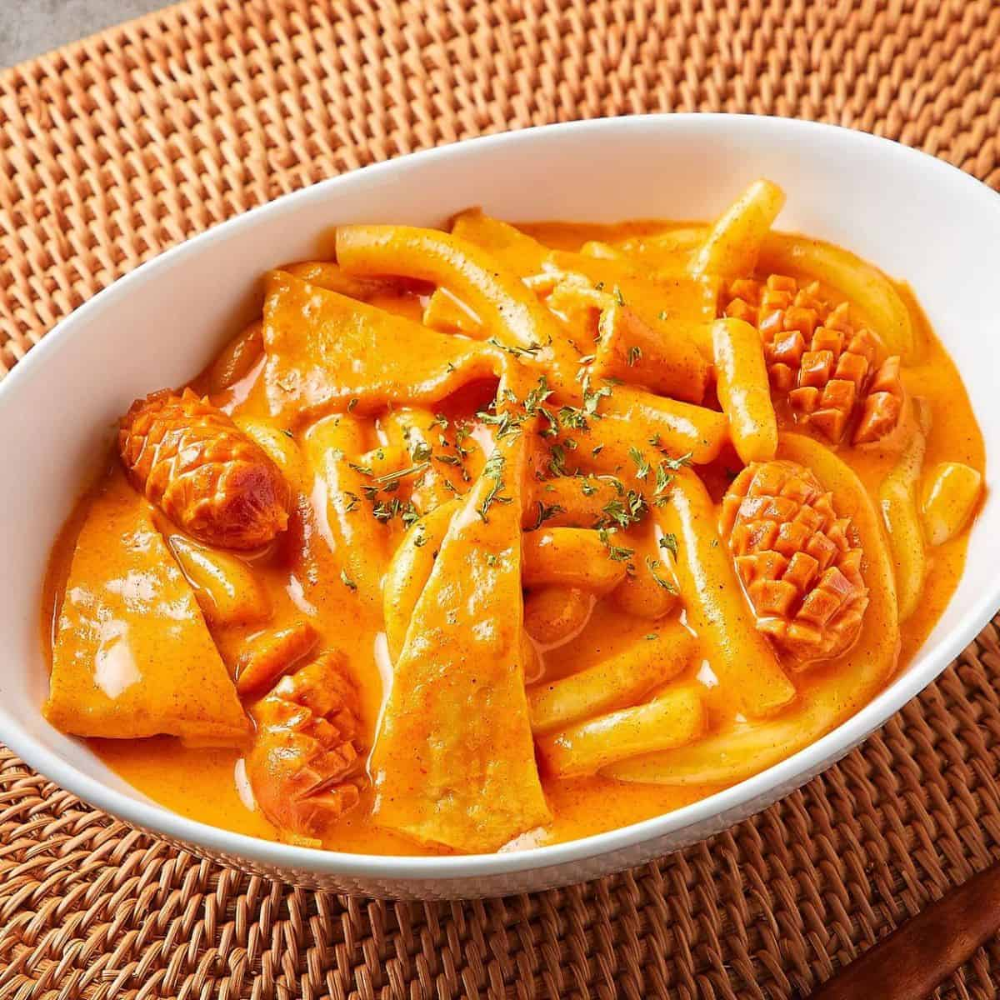

A Very Rosy Tteokbokki
I really enjoy pasta and korean food, so this is a combo of both!
Ingredients
- Tteokbokki
- Fishcake
- Minced garlic
- Sausage or spam
- Tomato paste
- Gochujang
- Gochugaru
- Curry powder
- Heavy cream
- One perfect large egg
- Optional: Onion, Mushrooms, Cheese
The Step-by-Step
- Defrost frozen tteok or fishcake by putting it in a bowl of lukewarm water
- Heat a frying pan on medium heat and add oil
- Add minced or sliced garlic
- When fragrant add onion, mushroom, whatever you want to include
- Add meats
- Once meat is browned, add a cup of heavy cream and milk
- Add 1 teaspoon of curry powder, tablespoon of gochujang and gochugaru
- Mix until its lookin' saucyy
- -I recommend you boil the tteok and fishcake slightly before you add it into the pan-
- Include in the pan and stir until cooked thoroughly
- Add a sunny side egg or soft boiled egg for a gooey eggy sauce, yum!
- Bon Appetit!
Return Home